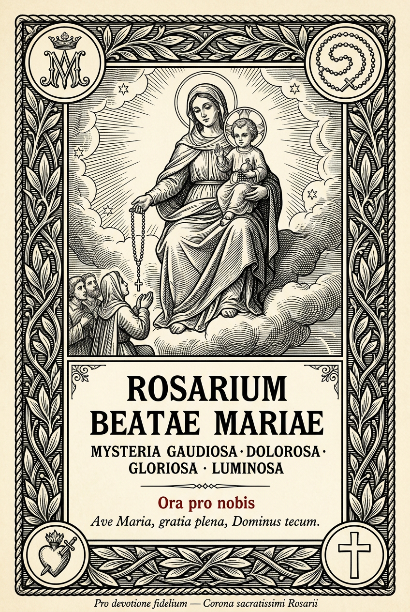

℣.
Deus, in adiutorium meum intende.
℟.
Domine, ad adiuvandum me festina.
Gloria Patri, et Filio, et Spiritui Sancto, sicut erat in principio, et nunc, et semper, et in saecula saeculorum. Amen.
Credo in Deum Patrem omnipotentem, Creatorem caeli et terrae...
(Symbolum Apostolorum recitatur, ut in usu communi Rosarii.)
Pater noster, qui es in caelis, sanctificetur nomen tuum; adveniat regnum tuum; fiat voluntas tua, sicut in caelo et in terra. Panem nostrum quotidianum da nobis hodie; et dimitte nobis debita nostra, sicut et nos dimittimus debitoribus nostris; et ne nos inducas in tentationem; sed libera nos a malo. Amen.
Ave Maria, gratia plena, Dominus tecum; benedicta tu in mulieribus, et benedictus fructus ventris tui, Iesus. Sancta Maria, Mater Dei, ora pro nobis peccatoribus, nunc et in hora mortis nostrae. Amen.
Gloria Patri, et Filio, et Spiritui Sancto, sicut erat in principio, et nunc, et semper, et in saecula saeculorum. Amen.
Mysteria Luminosa, ab Ioanne Paulo II proposita, adhiberi possunt iuxta morem recentiorem.
Salve, Regina, Mater misericordiae; vita, dulcedo, et spes nostra, salve. Ad te clamamus exsules filii Hevae; ad te suspiramus gementes et flentes in hac lacrimarum valle. Eia ergo, advocata nostra, illos tuos misericordes oculos ad nos converte; et Iesum, benedictum fructum ventris tui, nobis post hoc exsilium ostende. O clemens, O pia, O dulcis Virgo Maria.
Deus, cuius Unigenitus per vitam, mortem et resurrectionem suam nobis salutis aeternae praemia comparavit: concede, quaesumus; ut haec mysteria sacratissimo beatae Mariae Virginis Rosario recolentes, et imitemur quod continent, et consequamur quod promittunt. Per eundem Christum Dominum nostrum. Amen.